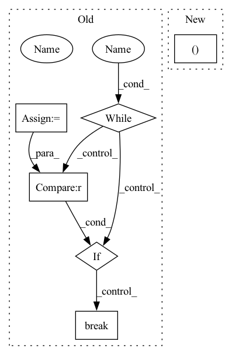

Pattern ID :23728
Before Change
else:
cap = cv2.VideoCapture(path)
cap.set(1, start)
nb_frames = 0
while True :
ret, img = cap.read()
assert ret, "exception: {}, start={}, length={}".format(path, start, length)
if crop_augment: pass
if mirror_augment: img = cv2.flip(img, 1)
frames.append(img)
nb_frames += 1
if nb_frames >= length : break
seq = np.stack(frames).transpose(3, 0, 1, 2).astype(np.float32) // THWC->CTHW
if cutout_augment:
seq = sequence_cutout(seq)
return seqAfter Change
if len(frames) > 0: img = frames[-1]
else: img = np.zeros((112, 112, 3), dtype=np.uint8)
if crop_augment:
img = cv2.resize(img, (128, 128 ))
if is_training:
crop_x = random.randint(0, 16)
crop_y = random.randint(0, 16)In pattern: SUPERPATTERN
Frequency: 4
Non-data size: 6
Instances Fragment ID: 73952394
Project Name: sailordiary/m3f.pytorch
Commit Name: 639f60090b44d3fdb3b40ae0df467ffed523da9e
Time: 2020-02-01
Author: me@sailorzhang.com
File Name: models/dataset.py
M Class Name: AnonimousClass
N Class Name: AnonimousClass
M Method Name: load_video(7)
N Method Name: load_video(6)
M Parent Class:
N Parent Class:
M File Name: models/dataset.py
N File Name: models/dataset.py
M Start Line: 50
M End Line: 75
N Start Line: 47
N End Line: 70
Before Change
else:
dataset = load_dataset(dataset_type, use_auth_token=use_auth_token)
label_info = dataset[list(dataset.keys())[0]].features["tags"]
while True :
if type(label_info) is Sequence :
label_info = label_info.feature
else:
assert type(label_info) is ClassLabel, f"Error at retrieving label information {label_info}"
break
label2id = {k: n for n, k in enumerate(label_info.names)}
return dataset, label2id
After Change
else:
assert dataset_type, "either of task_type or dataset_type should be specified"
dataset = load_dataset(dataset_type, dataset_name, use_auth_token=use_auth_token)
return dataset, get_label2id(dataset)
Fragment ID: 73952412
Project Name: cardiffnlp/tweetnlp
Commit Name: 0498b324a70ee12366948779a6f00180037cf443
Time: 2022-11-28
Author: asahi1992ushio@gmail.com
File Name: tweetnlp/ner/dataset.py
M Class Name: AnonimousClass
N Class Name: AnonimousClass
M Method Name: load_dataset_ner(4)
N Method Name: load_dataset_ner(4)
M Parent Class:
N Parent Class:
M File Name: tweetnlp/ner/dataset.py
N File Name: tweetnlp/ner/dataset.py
M Start Line: 25
M End Line: 38
N Start Line: 25
N End Line: 26
Before Change
) // noqa
sp, model = _load_model(config)
lines_generated = 0
delim = config.field_delimiter
invalid = 0
if num_lines is not None:
_line_count = num_lines
else:
_line_count = config.gen_lines
while True:
rec = _predict_chars(model, sp, start_string, config).data
_valid = None
try:
if not line_validator:
yield gen_text(text=rec, valid=None, explain=None, delimiter=delim)
else:
check = line_validator(rec)
if check is False:
_valid = False
invalid += 1
else:
_valid = True
yield gen_text(text=rec, valid=_valid, explain=None, delimiter=delim)
except Exception as err:
// logging.warning(f"Line failed validation: {rec} errored with {str(err)}")
invalid += 1
yield gen_text(text=rec, valid=False, explain=str(err), delimiter=delim)
else:
if line_validator and _valid:
lines_generated += 1
elif not line_validator:
lines_generated += 1
else:
...
if invalid > max_invalid:
raise RuntimeError("Maximum number of invalid lines reached!")
if lines_generated >= _line_count :
break
def _predict_chars(
model: tf.keras.Sequential,After Change
else:
_line_count = config.gen_lines
num_workers, chunks = split_work(parallelism, _line_count)
if num_workers == 1: // Sequential operation
gen = Generator(settings) Fragment ID: 73952381
Project Name: gretelai/gretel-synthetics
Commit Name: deb22ec34ee12cf49d8176c17464dea254085f39
Time: 2020-08-04
Author: 2822367+misberner@users.noreply.github.com
File Name: src/gretel_synthetics/generate.py
M Class Name: AnonimousClass
N Class Name: AnonimousClass
M Method Name: generate_text(6)
N Method Name: generate_text(5)
M Parent Class:
N Parent Class:
M File Name: src/gretel_synthetics/generate.py
N File Name: src/gretel_synthetics/generate.py
M Start Line: 164
M End Line: 206
N Start Line: 36
N End Line: 113
Before Change
else:
dataset = load_dataset(dataset_type, use_auth_token=use_auth_token)
label_info = dataset[list(dataset.keys())[0]].features["label"]
while True:
if type(label_info) is Sequence :
label_info = label_info.feature
else:
assert type(label_info) is ClassLabel, f"Error at retrieving label information {label_info}"
break
label2id = {k: n for n, k in enumerate(label_info.names)}
return dataset, label2id
After Change
else:
assert dataset_type, "either of task_type or dataset_type should be specified"
dataset = load_dataset(dataset_type, dataset_name, use_auth_token=use_auth_token)
return dataset, get_label2id(dataset)
Fragment ID: 73952405
Project Name: cardiffnlp/tweetnlp
Commit Name: 0498b324a70ee12366948779a6f00180037cf443
Time: 2022-11-28
Author: asahi1992ushio@gmail.com
File Name: tweetnlp/text_classification/dataset.py
M Class Name: AnonimousClass
N Class Name: AnonimousClass
M Method Name: load_dataset_text_classification(7)
N Method Name: load_dataset_text_classification(7)
M Parent Class:
N Parent Class:
M File Name: tweetnlp/text_classification/dataset.py
N File Name: tweetnlp/text_classification/dataset.py
M Start Line: 47
M End Line: 63
N Start Line: 50
N End Line: 51